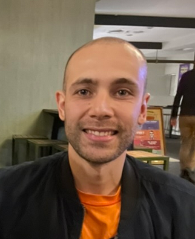

ABOUT ME
Mechanical Engineer with work experience in the field of non- destructive
testing, welding processes and welding metallurgy. I have more than 1 year
of experience as a software quality analyst, with interest in the field of
software test automation, in the development of web applications from the
frontend and working with agile methodologies.
EDUCATION
-
MECHANICAL ENGINEER, National university of Colombia,
April 2021
-
TECHNICAL BACHELOR'S DEGREE IN SYSTEMS, Instituto
parroquial Jesus de la buena esperanza, December 2009
EXPERIENCE
JUNIOR QA ENGINEER
Watch Our Own, Aug 2021 - Mar 2023
- Planning and execution of regression tests and maintenance
-
Evaluate the application's API using the postman tool to ensure that the
development team gets the correct answers
-
Design and execution of test cases taking into account different
techniques
-
Documentation, analysis and verification of errors (bugs) and
improvements of the application on the different platforms, Android, iOS
and web
ENGINEERING CHIEF
Puentes Grua VZ, Feb 2021 - Aug 2021
-
Design, manufacture and construction of overhead cranes and lifting
systems-Malacates
- Non-destructive tests on different elements
- weld inspection
- Assembly coordination
SKILLS
- Solid edge
- Solid works
- Inventor
- HMTL
- CSS
- JavaScript
- Postman
- Selenium
- Java
AWARDS
-
Front end development
International Labor
Organization Latin America and the Caribbean | 2022
-
MISION TIC 2022, CYCLE 4A DIPLOMA: DEEPENING IN DEVELOPMENT OF WEB
APPLICATIONS
Ministry of ICT-National University of Colombia | 2022
-
SELENIUM ESENCIAL
Linkedin learning| 2022
-
POSTMAN STUDENT EXPERT
Postman | 2021